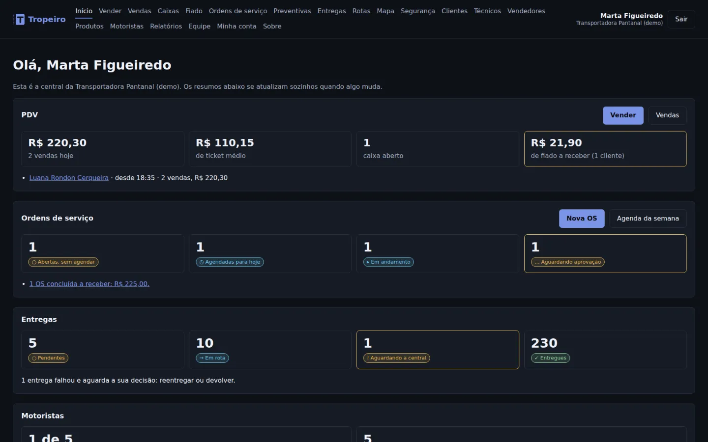
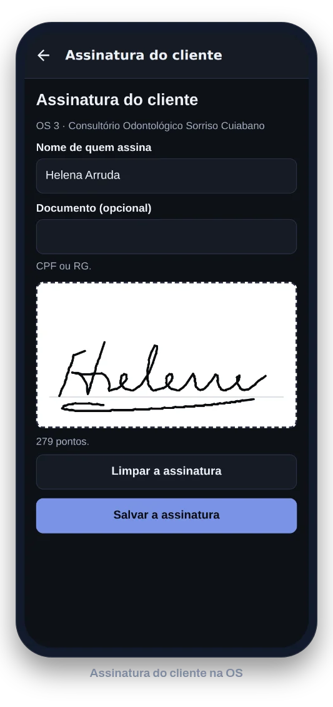
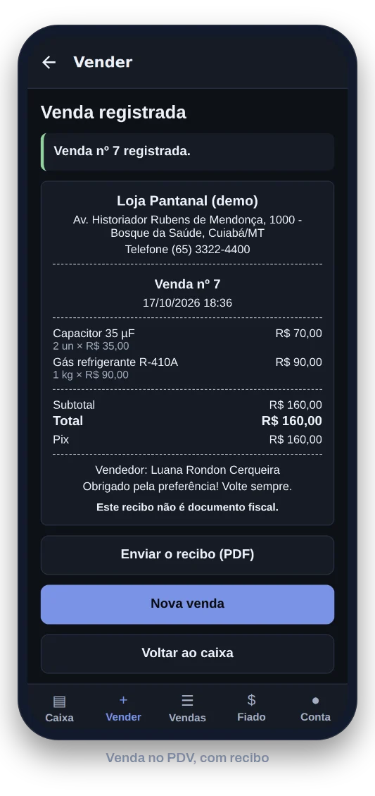

Tropeiro
Em produção · v1.12.1
Plataforma para a operação de pequenas e médias empresas: cada uma usa os módulos de que precisa, entre entregas de última milha, ordens de serviço, PDV e peças usadas, com um cadastro só de clientes e de produtos. O mesmo app de celular serve o motorista, o técnico e o vendedor. Começou pelas entregas em Mato Grosso e, em outubro de 2026, substituiu o piloto, o Logística Local & Rotas.
Ler o estudo de caso do piloto
Código privado. As imagens usam dados fictícios em Cuiabá.
- PIN do cliente e comprovante com foto, GPS e hash de integridade contra o “entregue, mas não recebi”.
- Rastreio ao vivo pelo WhatsApp, rotas com limite de carga e NF-e conferida pela câmera do motorista.
- Ordem de serviço do orçamento ao recebimento, com o técnico no app: fotos, peças e assinatura do cliente, mesmo sem internet.
- Manutenção preventiva que abre as ordens sozinha, no prazo de cada plano.
- PDV no balcão, com leitor de código de barras, e no celular, sem internet: caixa, fiado, troca e devolução.
- Peças usadas para desmanches: cada peça ligada ao carro de origem pelo chassi, com fotos, vídeo e etiqueta com código de barras.
- Ficha da peça com link para o WhatsApp, que já mostra a foto e o preço na conversa, e venda no PDV com garantia e devolução conferida.
- Pix no padrão do Banco Central e carteira do motorista MEI.


